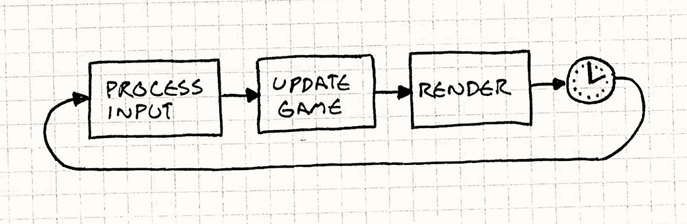
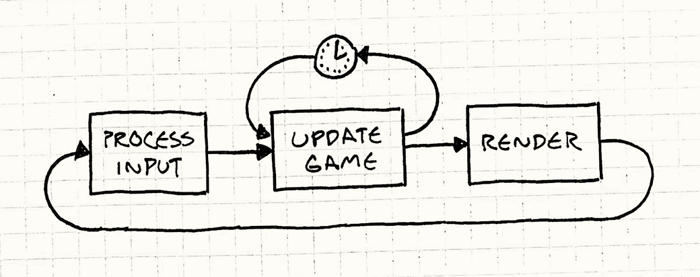
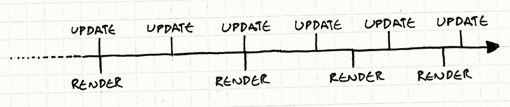
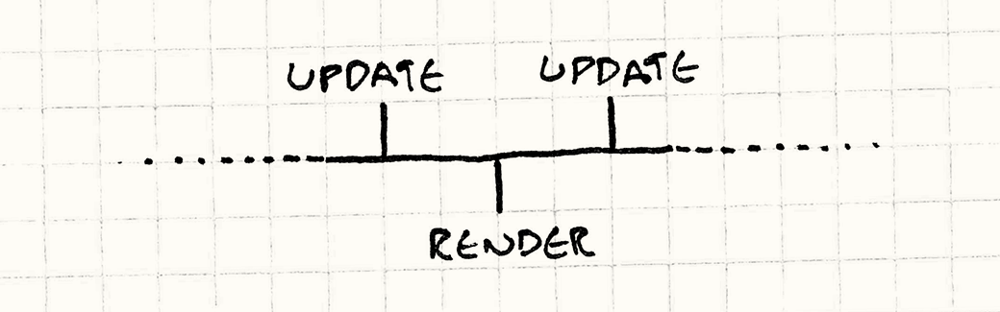

Game Loop
Game Programming PatternsSequencing Patterns
Intent
Decouple the progression of game time from user input and processor speed.
Motivation
If there is one pattern this book couldn’t live without, this is it. Game loops are the quintessential example of a “game programming pattern”. Almost every game has one, no two are exactly alike, and relatively few programs outside of games use them.
To see how they’re useful, let’s take a quick trip down memory lane. In the olden days of computer programming when everyone had beards, programs worked like your dishwasher: you dumped a load of code in, pushed a button, waited, and got results out. Done. These were batch mode programs: once the work was done, the program stopped.
You still see these today, though we thankfully don’t have to write them on punch cards any more. Shell scripts, command line programs, and even the little Python script that turns a pile of Markdown into this book are all batch mode programs.
Interview with a CPU
Eventually, programmers realized having to drop off a batch of code at the computing office and come back a few hours later for the results was a terribly slow way to get the bugs out of your program. They wanted immediate feedback. Interactive programs were born. Some of the first interactive programs were games:
YOU ARE STANDING AT THE END OF A ROAD BEFORE A SMALL BRICK BUILDING . AROUND YOU IS A FOREST. A SMALL STREAM FLOWS OUT OF THE BUILDING AND DOWN A GULLY. > GO IN YOU ARE INSIDE A BUILDING, A WELL HOUSE FOR A LARGE SPRING.
You could have a live conversation with the program. It waited for your input, then would respond to you. Then you would reply back, taking turns just like you learned to do in kindergarten. When it was your turn, it sat there doing nothing. Something like:
while (true) { char* command = readCommand(); handleCommand(command); }
Event loops
Modern graphic UI applications look surprisingly similar to old adventure games once you shuck their skin off. Your word processor usually just sits there doing nothing until you press a key or click something:
while (true) { Event* event = waitForEvent(); dispatchEvent(event); }
The main difference is that instead of text commands, the program is waiting for user input events — mouse clicks and key presses. It still works basically like the old text adventures where the program blocks waiting for user input, which is a problem.
Unlike most other software, games keep moving even when the user isn’t providing input. If you sit staring at the screen, the game doesn’t freeze. Animations keep animating. Visual effects dance and sparkle. If you’re unlucky, that monster keeps chomping on your hero.
This is the first key part of a real game loop: it processes user input, but doesn’t wait for it. The loop always keeps spinning:
while (true) { processInput(); update(); render(); }
We’ll refine this later, but the basic pieces are here. processInput() handles
any user input that’s happened since the last call. Then update() advances the game simulation one step. It runs
AI and physics (usually in that order). Finally, render() draws the game so
the player can see what happened.
A world out of time
If this loop isn’t blocking on input, that leads to the obvious question: how fast does it spin? Each turn through the game loop advances the state of the game by some amount. From the perspective of an inhabitant of the game world, the hand of their clock has ticked forward.
Meanwhile, the player’s actual clock is ticking. If we measure how quickly the game loop cycles in terms of real time, we get the game’s “frames per second”. If the game loop cycles quickly, the FPS is high and the game moves smoothly and quickly. If it’s slow, the game jerks along like a stop motion movie.
With the crude loop we have now where it just cycles as quickly as it can, two factors determine the frame rate. The first is how much work it has to do each frame. Complex physics, a bunch of game objects, and lots of graphic detail all will keep your CPU and GPU busy, and it will take longer to complete a frame.
The other is the speed of the underlying platform. Faster chips churn through more code in the same amount of time. Multiple cores, GPUs, dedicated audio hardware, and the OS’s scheduler all affect how much you get done in one tick.
Seconds per second
In early video games, that second factor was fixed. If you wrote a game for the NES or Apple IIe, you knew exactly what CPU your game was running on and you could (and did) code specifically for that. All you had to worry about was how much work you did each tick.
Older games were carefully coded to do just enough work each frame so that the game ran at the speed the developers wanted. But if you tried to play that same game on a faster or slower machine, then the game itself would speed up or slow down.
These days, though, few developers have the luxury of knowing exactly what hardware their game will run on. Instead, our games must intelligently adapt to a variety of devices.
This is the other key job of a game loop: it runs the game at a consistent speed despite differences in the underlying hardware.
The Pattern
A game loop runs continuously during gameplay. Each turn of the loop, it processes user input without blocking, updates the game state, and renders the game. It tracks the passage of time to control the rate of gameplay.
When to Use It
Using the wrong pattern can be worse than using no pattern at all, so this section is normally here to caution against over-enthusiasm. The goal of design patterns isn’t just to cram as many into your codebase as you can.
But this pattern is a bit different. I can say with pretty good confidence that you will use this pattern. If you’re using a game engine, you won’t write it yourself, but it’s still there.
You might think you won’t need this if you’re making a turn-based game. But even there, though the game state won’t advance until the user takes their turn, the visual and audible state of the game usually does. Animation and music keep running even when it’s “waiting” for you to take your turn.
Keep in Mind
The loop we’re talking about here is some of the most important code in your game. They say a program spends 90% of its time in 10% of the code. Your game loop will be firmly in that 10%. Take care with this code, and be mindful of its efficiency.
You may need to coordinate with the platform’s event loop
If you’re building your game on top of an OS or platform that has a graphic UI and event loop built in, then you have two application loops in play. They’ll need to play nice together.
Sometimes, you can just take control and make your loop the only one. For
example, if you’re writing a game against the venerable Windows API, your
main() can just have a game loop. Inside, you can call PeekMessage() to
handle and dispatch events from the OS. Unlike GetMessage(), PeekMessage()
doesn’t block waiting for user input so your game loop will keep cranking.
Other platforms don’t let you opt out of the event loop so easily. If you’re
targeting a web browser, the event loop is deeply built into browser’s execution
model. There, the event loop will run the show and you’ll use it as your game
loop too. You’ll call something like requestAnimationFrame() so that it will
call back into your code and keep the game running.
Sample Code
For such a long introduction, the code for a game loop is actually pretty straightforward. We’ll walk through a couple of variations and go over their good and bad points.
The game loop drives AI, rendering and other game systems, but those aren’t the
point of the pattern itself, so we’ll just call into fictitious methods here.
Actually implementing render(), update() and others is left as a
(challenging!) exercise for the reader.
Run, run as fast as you can
We’ve already seen the simplest possible game loop:
while (true) { processInput(); update(); render(); }
The problem with it is you have no control over how fast the game runs. On a fast machine, that loop will spin so fast users won’t be able to see what’s going on. On a slow machine, the game will crawl. If you have a part of the game that’s content-heavy or does more AI or physics, the game will actually play slower there.
Take a little nap
The first variation we’ll look at adds a simple fix. Say you want your game to run at 60 FPS. That gives you about 16 milliseconds per frame. As long as you can reliably do all of your game processing and rendering in less than that time, you can run at a steady frame rate. All you do process the frame and then wait until it’s time for the next one, like so:

The code looks a bit like this:
while (true) { double start = getCurrentTime(); processInput(); update(); render(); sleep(start + MS_PER_FRAME - getCurrentTime()); }
The sleep() here makes sure the game doesn’t run too fast if it processes a
frame quickly. It doesn’t help if your game runs too slowly. If it takes
longer than 16ms to update and render the frame, your sleep time goes
negative. If we had computers that could travel back in time, lots of things
would be easier, but we don’t.
Instead, the game slows down. You can work around this by doing less work each frame: cut down on the graphics and razzle dazzle, or dumb down the AI. But that impacts the quality of gameplay for all users, even ones on fast machines.
One small step, one giant step
Let’s try something a bit more sophisticated. The problem we have basically boils down to:
-
Each update advances game time by a certain amount.
-
It takes a certain amount of real time to process that.
If step two takes longer than step one, the game slows down. If it takes more than 16 ms of processing to advance game time by 16ms, it can’t possibly keep up. But if we can advance the game by more than 16ms of game time in a single step, then we can update the game less frequently and still keep up.
The idea then is to choose a time step to advance based on how much real time passed since the last frame. The longer the frame takes, the bigger steps the game takes. It always keeps up with real time because it will take bigger and bigger steps to get there. They call this a variable or fluid time step. It looks like:
double lastTime = getCurrentTime(); while (true) { double current = getCurrentTime(); double elapsed = current - lastTime; processInput(); update(elapsed); render(); lastTime = current; }
Each frame, we determine how much real time passed since the last game update
(elapsed). When we update the game state, we pass that in. The engine is then
responsible for advancing the game world forward by that amount of time.
Say you’ve got a bullet shooting across the screen. With a fixed time step, each frame you’ll move it according to its velocity. With a variable time step, you scale that velocity by the elapsed time. As the time step gets bigger, the bullet moves farther in each frame. That bullet will get across the screen in the same amount of real time, even if it’s twenty small fast steps, or four big slow ones.
This looks like a winner:
-
The game plays at a consistent rate on different hardware.
-
Players with faster machines are rewarded with smoother gameplay.
But, alas, there’s a serious problem lurking ahead: we’ve made the game non-deterministic and unstable. Here’s one example of the trap we’ve set for ourselves:
Say we’ve got a two-player networked game and Fred has some beast of a gaming machine while George is using his grandmother’s antique PC. That aforementioned bullet is flying across both of their screens. On Fred’s machine, the game is running super fast, so each time step is tiny. We cram, like, 50 frames in the second it takes the bullet to cross the screen. Poor George can only fit about five in.
This means on Fred’s machine, the physics engine updates the bullet’s position 50 times, but George’s only does it five times. Most games use floating point numbers and those are subject to rounding error. Each time you add two floating point numbers, the answer you get back can be a bit off. Fred’s machine is doing ten times as many operations, so he’ll accumulate a bigger error than George. The same bullet will end up in different places on their machines.
This is just one nasty problem a variable time step can cause, but there’s more. In order to run in real-time, game physics engines are approximations of the real laws of mechanics. To keep those approximations from blowing up, damping is applied. That damping is carefully tuned to a certain time step. Vary that, and the physics gets unstable.
This instability is bad enough that this example is only here as a cautionary tale and to lead us to something better…
Play catch up
One part of the engine that usually isn’t affected by a variable time step is rendering. Since the rendering engine captures an instant in time, it doesn’t care how much time advanced since the last one. It renders things wherever they happen to be right then.
We can use this fact to our advantage. We’ll update the game using a fixed time step because that makes everything simpler and more stable for physics and AI. But we’ll allow flexibility in when we render in order to free up some processor time.
It goes like this: A certain amount of real time has elapsed since the last turn of the game loop. This is how much game time we need to simulate for the game’s “now” to catch up with the player’s. We do that using a series of fixed time steps. The code looks a bit like:
double previous = getCurrentTime(); double lag = 0.0; while (true) { double current = getCurrentTime(); double elapsed = current - previous; previous = current; lag += elapsed; processInput(); while (lag >= MS_PER_UPDATE) { update(); lag -= MS_PER_UPDATE; } render(); }
There’s a few pieces here. At the beginning of each frame, we update lag based
on how much real time passed. This measures how far the game’s clock is behind
compared to the real world. We then have an inner loop to update the game one
fixed step at a time until it’s caught up. Once we’re caught up, we render and
start over again. You can visualize it sort of like this:

Note that the time step here isn’t the visible frame rate any more.
MS_PER_UPDATE is just the granularity we use to update the game. The shorter
this step is, the more processing time it takes to catch up to real time. The
longer it is, the choppier the gameplay is. Ideally, you want it pretty short,
often faster than 60 FPS, so that the game simulates with high fidelity on fast
machines.
But be careful not to make it too short. You need to make sure the time step
is greater than the time it takes to process an update(), even on the slowest hardware. Otherwise, your game simply can’t catch up.
Fortunately, we’ve bought ourselves some breathing room here. The trick is that we’ve yanked rendering out of the update loop. That frees up a bunch of CPU time. The end result is the game simulates at a constant rate using safe fixed time steps across a range of hardware. It’s just that the player’s visible window into the game gets choppier on a slower machine.
Stuck in the middle
There’s one issue we’re left with, and that’s residual lag. We update the game at a fixed time step, but we render at arbitrary points in time. This means that from the user’s perspective, the game will often display at a point in time between two updates.
Here’s a timeline:

As you can see, we update at a nice tight, fixed interval. Meanwhile, we render whenever we can. It’s less frequent than updating, and isn’t steady either. Both of those are OK. The lame part is that we don’t always render right at the point of updating. Look at the third render time. It’s right between two updates:

Imagine a bullet is flying across the screen. On the first update, it’s on the left side. The second update moves it to the right side. The game is rendered at a point in time right between those two updates, so the user expects to see that bullet in the center of the screen. With our current implementation, it will still just be on the left side. This means motion looks jagged or stuttery.
Conveniently, we actually know exactly how far between update frames we are
when we render: it’s stored in lag. We bail out of the update loop when it’s
less than the update time step, not when it’s zero. That leftover amount?
That’s how far into the next frame we are.
When we go to render, we’ll pass that in:
render(lag / MS_PER_UPDATE);
The renderer knows each game object and its current velocity. Say that bullet
is 20 pixels from the left side of the screen and is moving right 400 pixels per
frame. If we are halfway between frames, then we’ll end up passing 0.5 to
render(). So it draws the bullet half a frame ahead, at 220 pixels. Ta-da,
smooth motion.
Of course, it may turn out that that extrapolation is wrong. When we actually calculate the next frame, we may discover the bullet hit an obstacle or slowed down or something. We rendered its position interpolated between where it was on the last frame and where we think it will be on the next frame. But we don’t know that until we’ve actually done the full update with physics and AI.
So the extrapolation is a bit of a guess and sometimes ends up wrong. Fortunately, though, those kinds of corrections aren’t usually noticeable. At least, they’re less noticeable than the stuttering you get if you don’t extrapolate at all.
Design Decisions
Despite the length of this chapter, I’ve left out more than I’ve included. Once you throw in things like synchronizing with the display’s refresh rate, multithreading, and GPUs, a real game loop can get pretty hairy. At a high level, though, here are a few questions you’ll likely answer:
Do you own the game loop, or does the platform?
This is less a choice you make and more one that’s made for you. If you’re making a game that runs in a web browser, you pretty much can’t write your own classic game loop. The browser’s event-based nature precludes it. Likewise, if you’re using an existing game engine, you will probably rely on its game loop instead of rolling your own.
-
Use the platform’s event loop:
-
It’s simple. You don’t have to worry about writing and optimizing the core loop of the game.
-
It plays nice with the platform. You don’t have to worry about explicitly giving the host time to process its own events, caching events, or otherwise managing the impedence mismatch between the platform’s input model and yours.
-
You lose control over timing. The platform will call your code as it sees fit. If that’s not as frequently or as smoothly as you’d like, too bad. Worse, most application event loops weren’t designed with games in mind and usually are slow and choppy.
-
-
Use a game engine’s loop:
-
You don’t have to write it. Writing a game loop can get pretty tricky. Since that core code gets executed every frame, minor bugs or performance problems can have a large impact on your game. A tight game loop is one reason to consider using an existing engine.
-
You don’t get to write it. Of course, the flip side to that coin is the loss of control if you do have needs that aren’t a perfect fit for the engine.
-
-
Write it yourself:
-
Total control. You can do whatever you want with it. You can design it specifically for the needs of your game.
-
You have to interface with the platform. Application frameworks and operating systems usually expect to have a slice of time to process events and do other work periodically. If you own your app’s core loop, it won’t get any. You’ll have to explicitly hand off control periodically to make sure the framework doesn’t hang or get confused.
-
How do you manage power consumption?
This wasn’t an issue five years ago. Games ran on things plugged into walls or dedicated handheld devices. But with the advent of smart phones, laptops, and mobile gaming, the odds are good you do care about this now. A game that runs beautifully but turns their phone into a space heater before running out of juice thirty minutes later is not a game that makes people happy.
Now, you may need to think about making your game look great, but also use as little CPU as possible. There will likely be an upper bound to performance where you let the CPU sleep if you’ve done all the work you need to do in a frame.
-
Run as fast as it can:
This is what you’re likely to do for PC games (though even those are increasingly being played on laptops). Your game loop will never explicitly tell the OS to sleep. Instead, any spare cycles will be spent cranking up the FPS or graphic fidelity.
This gives you the best possible gameplay experience but it’ll use as much power as it can. If the player’s on a laptop, they’ll have a nice lap warmer.
-
Clamp the framerate:
Mobile games are often more focused on the quality of gameplay than they are maximizing the detail of the graphics. Many of these games will set an upper limit on the framerate (usually 30 or 60 FPS). If the game loop is done processing before that slice of time is spent, it will just sleep for the rest.
This gives the player a “good enough” experience and then goes easy on their battery beyond that.
How do you control gameplay speed?
A game loop has two key pieces: non-blocking user input, and adapting to the passage of time. Input is straightforward. The magic is in how you deal with time. There are a near infinite number of platforms that games can run on and any single game may run on quite a few. How it accommodates that variation is key.
-
Fixed time step with no synchronization:
This was our first sample code. You just run the game loop as fast as you can.
-
It’s simple. This is its main (well, only) virtue.
-
Game speed is directly affected by hardware and game complexity. And its main vice is that if there’s any variation, it will directly affect the game speed. It’s the fixie of game loops.
-
-
Fixed time step with synchronization:
The next step up on the complexity ladder is running the game at a fixed time step, but adding a delay or synchronization point at the end of the loop to keep the game from running too fast.
-
Still quite simple. It’s only one line of code more than the probably-too-simple-to-actually-work example. In most game loops, you will likely do synchronization anyway. You will probably double buffer your graphics and synchronize the buffer flip to the refresh rate of the display.
-
It’s power-friendly. This is a surprisingly important consideration for mobile games. You don’t want to kill the user’s battery unnecessarily. By simply sleeping for a few milliseconds instead of trying to cram ever more processing into each tick, you save power.
-
The game doesn’t play too fast. This fixes half of the speed concerns of a fixed loop.
-
The game can play too slow. If it takes too long to update and render a game frame, playback will slow down. Because this style doesn’t separate updating from rendering, it’s likely to hit this sooner than more advanced options. Instead of just dropping rendering frames to catch up, gameplay will slow down.
-
-
Variable time step:
I’ll put this in here as an option in the solution space, with the caveat that most game developers I know recommend against it. It’s good to remember why it’s a bad idea, though.
-
It adapts to playing both too slowly and too fast. If the game can’t keep up with real time, it will just take larger and larger time steps until it does.
-
It makes gameplay non-deterministic and unstable. And this is the real problem, of course. Physics and networking in particular become much harder with a variable time step.
-
-
Fixed update time step, variable rendering:
The last option we covered in the sample code is the most complex but also the most adaptable. It updates with a fixed time step, but can drop rendering frames if it needs to to catch up to the player’s clock.
-
It adapts to playing both too slowly and too fast. As long as the game can update in real time, the game won’t fall behind. If the player’s machine is top-of-the-line, it will respond with a smoother gameplay experience.
-
It’s more complex. The main downside is there is a bit more going on in the implementation. You have to tune the update time step to be both as small as possible for the high-end, while not being too slow on the low end.
-
See Also
-
The classic article on game loops is Glenn Fiedler’s “Fix Your Timestep”. This chapter wouldn’t be the same without it.
-
Witters’ article on game loops is a close runner-up.
-
The Unity framework has a complex game loop, detailed in a wonderful illustration here.